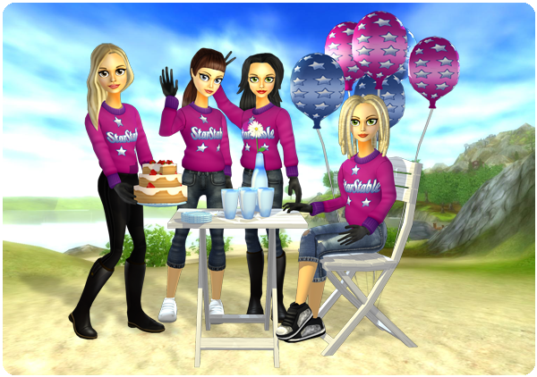
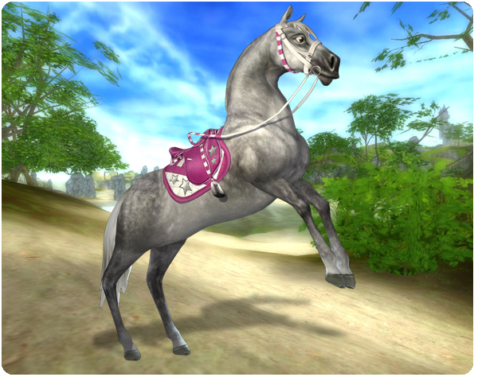

Üdvözlet mindenkinek!
Ezen a héten ünnepli a Star Stable az első születésnapját! Ez azt jelenti, hogy a Star Stable már egy egész éve nyitva tart. Ezt szeretnénk egy igazán ünnepi hangulatban megünnepelni egész Jorvikban!
Születésnapi ajándék:
Látogass el az egyik különleges születésnapi boltba, és szerezd meg a képen látható menő Star Stable pulóvert csak 1 Jorvik Shillingért!

Új exkluzív felszerelések remek áron:
A Star Stable 1. születésnapjának megünneplésére most exkluzív születésnapi szett kapható a lovadnak! Az egyedi szettet Jorvik összes falujában található különleges születésnapi üzletekben találod meg. Használd ki az alkalmat, és vásárold meg a szettet, mert csak jövő szerdáig lesz kapható!

Tűzijáték:
Ünnepeljünk megfelelően tűzijátékokkal! Tűzijátékok használata megengedett a Silverglade faluban, Pinta Erődben és Moorland istálló területén kívüli kijelölt helyeken. Minél több ember vesz részt egyszerre és lő ki tűzijátékokat, annál jobb lesz a show!
Köszönjük, hogy játszol, és hogy még élvezetesebbé teszed a Star Stable játékot!
Üdvözlettel: